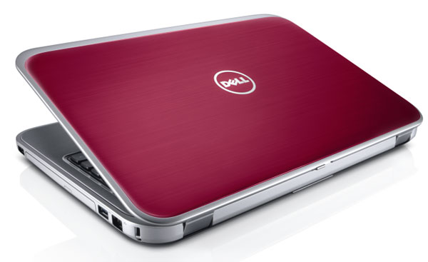

Inspirado pelos posts dos devs Felipe Fialho e Willian Justen
Meu último post foi pra comemorar pouco mais de 1 ano de carreira no desenvolvimento front-end. Revendo-o, passou pela minha cabeça: as pessoas que leram aquele post sabem o que é um front-end, afinal? O que essa palavra quase mágica significa?
Resumindo o termo, significa a criação de interfaces. No meu caso, trabalhando com a criação de sites e aplicativos para internet, é o layout da página que você acessa. Mas acho que essa é a definição (e atribuição) mais básica. Hoje existem muitas outras tecnologias que fazem do trabalho do desenvolvedor front-end um dos mais dinâmicos e divertidos. Todo dia tem coisa nova pra aprender, testar e implementar em nossos projetos.
Segundo nosso vocabulário próprio, ainda sou um desenvolvedor júnior: um cara em início de carreira, com conhecimentos “simples”, em comparação com a enorme gama disponível, mas já capaz de entregar um site completo — de preferência que se adapte a cada tamanho de tela, com algum gerenciador de conteúdo, banco de dados, ou não. Pelo menos é assim que eu me vejo.
Mas, fugindo das nomenclaturas e burocracias, o importante para um front-end (e qualquer desenvolvedor) é, no final das contas, cumprir seu papel. Escrever um bom código, que sirva bem a algum propósito.
Para isso, nós usamos algumas coisinhas no nosso dia a dia. Se você não é da área, aqui eu explico as ferramentas e processos que uso para criar um website para um cliente. Se você é um desenvolvedor iniciante, como eu, espero que isso ajude a esclarecer algumas coisas.
É assim que eu trabalho:
Dispositivos
Começamos com um item já indispensável, certo? Eu uso um notebook Dell Inspiron 14, um vermelho bonitão. É de 2014, bem velhinho já. Mesmo tendo uns problemas de HD de vez em quando, ele ainda me serve muito bem com seus 4GB de RAM, 1 TB de armazenamento, processador Intel i5 e 14 polegadas de tela. Tá de boa, e nos planos, pretendo adicionar um SSD e comprar uma segunda tela, maior.
Pra ajustar na responsividade, gosto de testar direto no dispositivo alvo, quando posso. Se o layout é adaptado para celular, teste no celular. Para isso, eu uso um smartphone Galaxy S3 Mini, ótimo para visualizar resoluções menores. Também rola uns testes no meu Moto G4 Play, que é uma polegada maior.
Aplicativos
Evernote: Comecei a usar o Evernote na época da Faculdade, como caderno. Agora, ele serve para tudo — manter contatos de clientes, organizar requisitos de um projeto, estudos, e por aí vai.
Trello: Ótimo para dividir e organizar as tarefas do dia a dia e de cada projeto.
Visual Studio Code: O que seria do desenvolvedor front-end sem um editor de código? Usei por algum tempo a versão completa do Visual Studio, a IDE. Tentei o Sublime, mas não curti. Uso o VS Code desde o lançamento, e tenho acompanhado cada melhoria e nova implementação feitas pela Microsoft e comunidade. Recomendo.
Ele tem uma série de extensões que facilitam o uso e até a adaptação, se você já está acostumado com outro editor. Eu uso o Auto Rename, colorize e o vscode-icons, além do tema Atom One Dark, que deixa as cores bem mais agradáveis. Outro que recomendo é o Material Theme. Fora o terminal integrado, que é simplesmente genial.
Google Chrome: Amado por uns e odiado por outros tantos, o Chrome é o meu navegador principal. Para testes e debug, seu DevTools é bem completo — e com Dark Theme, fica melhor ainda.
Adobe XD: Também sou responsável por fazer o layout de cada site em formato de imagem. O XD, programa free da Adobe, facilita muito esse trabalho e a prototipagem. Vale dar uma olhada.
Workflow
SASS: Uma outra forma de escrever CSS. Até mais divertida, eu diria.
WordPress: Nada como o gerenciador de conteúdo mais famoso do mundo. Praticamente todos os meus sites são com ele. E por causa dele, acabei por aprender um pouco de PHP também.
WAMP: Pra rodar um servidor local. Uma boa alternativa ao XAMPP. O WAMP é “dedicado” para o Windows, e dá muito menos dor de cabeça.
OneDrive: Mantenho os arquivos mais importantes na nuvem. Tenho 5 GB no OneDrive, o que por enquanto está ótimo.
Organizze: Para manter as finanças pessoais bem organizadas, como o nome já diz. A webapp deles é bem bonita e limpa, cumpre bem o papel. Também recomendo.
Spotify: Já falei dele em outro post, então já sabe. Música me faz funcionar muito bem, me ajuda na criatividade e na animação durante o expediente. Fora que rola de tudo nas minhas playlists — metal, rock clássico, um pouquinho de indie, rap, música clássica… E por aí vai.
Bom, acho que é isso. O post ficou meio longo (eu e minha mania de escrever muito), mas curti fazer essa listinha. Tudo isso aqui é o que eu uso, o que supre as minhas necessidades pessoais, das coisas que eu faço. Claro, isso varia de pessoa pra pessoa, de empresa pra empresa, de projeto para projeto.
Você pode achar que é pouco, que é básico demais, mas no final, o que importa é se o que você usa te atende e faz você ser mais produtivo. Se entrega resultado pra quem tá pagando. Vale muito manter a mente aberta e disposta a aprender e mudar, se for preciso, mas essa não deve ser uma obrigação, ou ter prazo contado. Ferramentas são só um meio, o resultado é o que importa, pra todos os envolvidos.